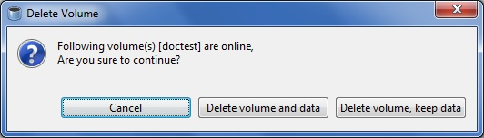

The Delete Volume window appears. You are asked to confirm before proceeding with the volume deletion

In case of multiple volumes, the Delete Volume window is displayed as shown below.

The brick(s) directories of the volume will be renamed to <olddirectory>_<timestamp>.

In case of multiple volumes, the Delete Volume window is displayed as follows.